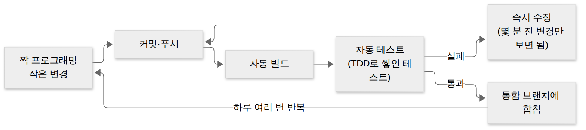

R04 · 애자일 — 계획표 대신 2주마다 보여 주기: XP·스크럼·칸반·린
1과목 리뉴얼A1 리뉴얼 넷째 장은 책 1.1.3 애자일이에요. R01~R03에서는 요구사항을 미리 모으고, 그것을 UML 그림으로 굳혀서 모두가 같은 설계도를 보게 만드는 쪽을 봤어요. 오늘은 출발점이 정반대예요. “요구는 어차피 바뀐다. 그러니 다 정해 놓고 만들지 말고, 조금 만들어 보여 주고, 반응을 보고, 다시 고치자.” 이 생각을 원칙으로 정리한 것이 애자일 선언이고, 그 원칙을 실제로 굴리는 방법이 XP·스크럼·린·칸반·크리스탈·ASD·FDD예요. 시험에서는 20회 시험 중 20회 모두 이 묶음에서 한 문제 이상 나왔어요. 1과목에서 가장 꾸준히 나오는 주제 중 하나예요.
- 애자일의 정의(짧은 반복 + 즉시 피드백으로 변화에 대응)와 등장 배경을 말하고, 애자일 선언 4가치의 ‘A보다 B’ 방향을 뒤집은 선지를 가려낼 수 있다
- XP의 정의와 5가치(용기·단순성·의사소통·피드백·존중)를 구별하고, 5가치가 아닌 것과 XP에 대한 틀린 설명(구조적 방법론, 테스트 생략, 한 사람이 모든 책임)을 고를 수 있다
- XP 12 기본원리를 이름과 뜻으로 짝짓고, 원리가 아닌 것(선형 순차 방식)을 가려낼 수 있다
- 스크럼 주요 용어 8개(제품 책임자·제품 백로그·스프린트·스크럼 미팅·스크럼 마스터·스프린트 회고·번다운 차트·속도)와 칸반 보드를 구별하고, “스프린트는 3달 이상” 같은 틀린 설명을 잡아낼 수 있다
- 애자일 계열(XP·스크럼·린·칸반·크리스탈·ASD·FDD)을 한 줄 특징으로 구별하고, 애자일이 아닌 것(모듈 중심 개발·하둡·폭포수 등)을 고를 수 있다
1부 (약 13분)
2부 (약 23분)
⓪ 큰 그림 — 6개월 계획표가 2주 만에 휴지가 된 날
R02·R03에서 함께 설계한 공유 킥보드 앱 ‘씽씽’에 다음 버전 이야기가 나왔어요. 씽씽 2.0에는 출퇴근용 정기권과 회사·동아리용 단체 대여를 넣기로 했죠. 기획팀은 요구사항 정의 두 달, 설계 한 달, 구현 두 달, 테스트 한 달로 6개월짜리 간트 차트를 그렸어요. 그런데 착수 2주 뒤, 경쟁사가 먼저 월 구독 상품을 내놨어요. 회원들은 “씽씽은 언제 나와요?”라고 묻는데, 계획대로라면 첫 화면이 나오는 건 넉 달 뒤예요. 시장 입장에서 6개월짜리 간트 차트는 내년 달력에 적어 둔 다짐 같은 거예요. 쓸 때는 비장했지만 그때가 되면 세상이 이미 다른 곳에 가 있죠.
팀은 방식을 바꾸기로 해요. 6개월 뒤 한 번에 내놓는 대신 2주마다 실제로 동작하는 조각을 만들어 회원 일부에게 보여 주고, 반응을 보고 다음 2주에 무엇을 만들지 다시 정하기로요. 이 장 전체가 씽씽 2.0 팀의 첫 6주 이야기예요. 팀이 고른 원칙(애자일 선언), 개발자들의 일하는 습관(XP), 팀 운영 틀(스크럼), 일의 흐름을 보이게 하는 보드(칸반)를 차례로 붙여 가면서, 책에 나오는 나머지 방법론(린·크리스탈·ASD·FDD)도 한 자리씩 찾아 줄게요.
① 애자일이란, 왜 생겼나
애자일(Agile)은 개발과 함께 즉시 피드백을 받아 요구 변화에 유동적으로 대응하는 소프트웨어 개발 방식이에요. 전체를 한 번에 계획하고 끝까지 밀고 가는 대신, 일을 몇 주 단위의 짧은 반복(이터레이션)으로 쪼개요. 반복 하나 안에서 무엇을 만들지 살펴보고(탐색), 설계하고, 개발하고, 테스트까지 한 바퀴를 다 돌고, 반복이 끝날 때마다 동작하는 소프트웨어 조각(증분)을 고객에게 보여 줘요. 고객의 반응이 다음 반복의 계획이 돼요. 영어 agile은 ‘민첩한’이라는 뜻인데, 빨리 만드는 것보다 방향을 빨리 바꿀 수 있는 것이 핵심이에요.
등장 배경
애자일이 등장한 이유는 두 방향에서 설명할 수 있어요. 하나는 바깥 환경의 변화예요. 인터넷 서비스와 앱이 늘면서 소프트웨어가 시장에 나오는 속도 자체가 경쟁력이 됐어요. 이걸 시장 적시성(Time to Market)이라고 해요. 좋은 제품도 경쟁사보다 반년 늦으면 의미가 줄어들죠. 다른 하나는 기존 방법론의 한계예요. 폭포수 모형처럼 단계를 순서대로 밟는 전통적인 방법론은 각 단계 끝에 문서를 완성하고 승인받는 것을 중시해요. 대규모 공공 시스템처럼 요구가 거의 안 바뀌는 곳에서는 장점이지만, 요구가 자주 바뀌는 곳에서는 문서와 절차를 다시 고치는 비용이 개발 자체보다 커져요. 씽씽 2.0의 6개월 계획이 바로 그 경우였어요.
| 구분 | 무엇이 바뀌었나 | 씽씽 2.0에서 |
|---|---|---|
| 개발 환경 변화 | 서비스 출시 주기가 짧아지고, 고객 요구가 수시로 바뀜 | 경쟁사 월 구독 출시, 회원 문의 폭주 |
| 시장 적시성 | 먼저 내놓는 것 자체가 경쟁력 | 넉 달 뒤 첫 화면은 너무 늦음 |
| 전통 방법론의 한계 | 문서·절차 위주라 변경 비용이 큼 | 요구 정의서 120쪽을 다시 고쳐 승인받아야 함 |
애자일의 특징과 폭포수와의 차이
애자일 방식에는 세 가지 공통 특징이 있어요. 첫째, 짧은 작업 단위로 계획해요. 6개월 전체 계획 대신 이번 2주에 할 일만 자세히 정하고, 그다음은 대략의 순서만 둬요. 둘째, 실제로 동작하는 소프트웨어에 가치를 둬요. 진척도를 문서 완성률이 아니라 “지금 눌러 볼 수 있는 기능이 몇 개인가”로 재요. 셋째, 고객과 계속 소통하며 피드백을 받아요. 고객은 마지막 인수 테스트 때 한 번 등장하는 손님이 아니라 2주마다 데모를 보는 동료예요.
폭포수 모형과 비교하면 차이가 선명해져요. 폭포수는 앞 단계의 결과물을 완전히 확인한 뒤에야 다음 단계로 넘어가요. 그래서 요구가 중간에 바뀌면 이미 끝낸 단계로 거슬러 올라가야 하고, 고객이 실제 화면을 보는 건 맨 마지막이에요. 애자일은 모든 단계를 짧게 여러 번 돌기 때문에 바뀐 요구를 다음 반복에 바로 넣을 수 있어요. 대신 전체 일정·비용을 처음부터 확정하기 어렵고, 고객이 계속 참여해 줘야 한다는 부담이 있어요.
② 애자일 선언 4가치 기출 11회
애자일 소프트웨어 개발 선언(Manifesto for Agile Software Development)은 2001년, 가벼운 개발 방법론을 각자 써 오던 개발자 17명이 모여 공통의 가치를 한 장으로 정리한 문서예요. XP·스크럼·크리스탈·ASD·FDD를 만든 사람들이 이 자리에 있었어요. 그래서 애자일 선언은 특정 방법론의 규칙이 아니라 여러 애자일 방법론이 공유하는 가치관이에요. 선언은 4가지 가치와 이를 풀어 쓴 12가지 원칙(고객 만족을 위한 조기·지속 인도, 늦은 요구 변경도 환영, 몇 주 단위의 잦은 인도, 매일 함께 일하기, 동작하는 소프트웨어가 진척의 척도, 지속 가능한 속도, 단순성, 자기 조직 팀, 정기적 회고 등)으로 이루어져요. 시험은 거의 4가치에서 나와요.
4가치는 모두 “왼쪽보다 오른쪽” 구조예요. 정확히 말하면 선언문 원문은 “우리는 왼쪽에 있는 것도 가치 있다고 인정하지만, 오른쪽에 있는 것을 더 높이 평가한다”라고 끝나요. 문서·계획·계약·도구를 버리자는 게 아니라, 둘이 부딪칠 때 무엇을 먼저 챙기느냐의 우선순위예요.
| 덜 중시(그래도 가치 있음) | 더 중시 | 씽씽 2.0 장면 |
|---|---|---|
| 공정과 도구 | 개인과 상호작용 | 지라(Jira) 티켓 규칙 다툼보다, 막히면 옆자리에 바로 묻는다 |
| 포괄적인 문서 | 동작하는 소프트웨어 | 정기권 기획서 100쪽 대신 2주 뒤 눌러 볼 수 있는 결제 화면 |
| 계약 협상 | 고객과의 협력 | 계약서 조항 대신 매주 운영팀과 데모 보며 우선순위 조정 |
| 계획을 따르기 | 변화에 대응하기 | 경쟁사 출시 소식에 다음 스프린트 순서를 바로 바꿈 |
출제자는 4가치의 좌우를 뒤집는 데 진심이에요. 선지 문장이 길어 보여도 “~보다” 앞뒤에 무엇이 놓였는지만 보면 돼요. 오른쪽 열(사람·동작하는 소프트웨어·고객 협력·변화 대응)이 “보다” 뒤, 즉 더 중요한 자리에 있어야 맞는 문장이에요. 아래 문장으로 연습해 보세요. 판정 칸을 손으로 가리고 먼저 답해 보면 좋아요.
| 문장 | 판정 |
|---|---|
| 1. 이해하기 좋은 문서보다 실제로 작동하는 소프트웨어를 더 중시한다 | 맞음 |
| 2. 실제로 작동하는 소프트웨어보다 꼼꼼한 문서를 더 중시한다 | 뒤집힘 |
| 3. 계약 조건 협상보다 고객과 함께 일하는 것을 더 중시한다 | 맞음 |
| 4. 팀원 사이의 소통보다 정해진 프로세스와 도구를 더 중시한다 | 뒤집힘 |
| 5. 문서는 필요 없으므로 작성하지 않는다 | 틀림(왼쪽도 가치 있음) |
| 6. 동작하는 소프트웨어를 진척의 주요 척도로 삼는다 | 맞음(12원칙) |
③ XP — 정의와 5가치 기출 12회
애자일 선언은 가치관일 뿐이라, 내일 아침 개발자가 무엇을 해야 하는지는 말해 주지 않아요. 그 빈칸을 개발자의 일하는 습관 수준에서 채운 방법론이 XP예요. XP(eXtreme Programming, 익스트림 프로그래밍)는 켄트 벡(Kent Beck)이 정리한 애자일 방법론으로, 의사소통을 개선하고 즉각적인 피드백으로 소프트웨어 품질을 높이는 데 초점을 둬요. 1~3주 정도의 짧은 반복으로 작은 릴리스를 자주 내고, 이론보다 실용성을 강조해요. 이름의 ‘익스트림’은 좋다고 알려진 습관(코드 리뷰·테스트·통합)을 극단까지 밀어붙인다는 뜻이에요. 코드 리뷰가 좋다면 아예 둘이 같이 짜고(짝 프로그래밍), 테스트가 좋다면 코드보다 테스트를 먼저 쓰고(TDD), 통합이 좋다면 하루에도 여러 번 통합하는(지속적 통합) 식이죠.
XP는 소규모 팀, 요구사항이 자주 바뀌는 프로젝트에 잘 맞아요. 문서보다 소스 코드를 중심에 두고, 요구사항은 두꺼운 명세서 대신 고객이 짧게 쓴 사용자 스토리(User Story)로 받아요. 테스트는 생략하는 게 아니라 오히려 자동화해서 항상 돌려요. 그리고 코드는 팀 전체의 것이라 책임도 팀이 함께 져요. 이 다섯 문장을 뒤집은 것이 XP 오답 선지의 거의 전부예요.
XP의 5가지 가치
XP는 실천 방법(12 기본원리)을 떠받치는 가치 다섯 개를 둬요. 실천이 애매할 때 판단 기준이 되는 것들이에요.
| 가치 | 뜻 | 씽씽 2.0 팀에서 |
|---|---|---|
| 용기(Courage) | 필요하면 설계를 바꾸고, 문제를 숨기지 않고 말하는 태도 | 엉켜 있는 쿠폰 모듈을 리팩토링하자고 먼저 제안함 |
| 단순성(Simplicity) | 지금 필요한 것만, 가장 단순하게 만든다 | “언젠가 쓸” 기업용 정산 기능은 이번 스프린트에서 뺌 |
| 의사소통(Communication) | 개발자·관리자·고객 사이의 원활한 소통 | 운영팀 담당자가 같은 메신저 채널에서 바로 답함 |
| 피드백(Feedback) | 테스트·고객·동료로부터 빠르게 결과를 듣는다 | 커밋 10분 뒤 자동 테스트 결과, 2주마다 회원 반응 |
| 존중(Respect) | 팀원 서로의 기여와 판단을 존중 | 신입의 의견도 회고에서 같은 무게로 다룸 |
다섯 개를 외울 때는 씽씽 2.0 팀 사무실의 회의실 다섯 개를 떠올려 보세요. 입구부터 용기실 → 단순실 → 소통실 → 피드백실 → 존중실. 이 중 가장 자주 빼먹는 게 마지막 존중이에요. 존중은 코드 리뷰에서 “이거 누가 짰어요?” 대신 “이 부분 같이 볼까요?”라고 말하게 만드는 가치예요. 존중이 빠지면 피드백이 공격이 되고, 공격이 무서우면 용기도 사라지죠. 다섯 가치가 서로 기대고 있다는 게 이 순서의 속뜻이에요.
④ XP 12 기본원리
XP 기본원리(실천 사항)는 5가치를 매일의 행동으로 옮긴 규칙 12개예요. 하나씩 따로 외우면 많아 보이니, 무엇을 위한 원리인지에 따라 세 묶음으로 나눠 볼게요. 그림 4가 그 지도예요.
계획 · 릴리스 묶음 — 무엇을 언제 내놓나
계획 세우기(Planning Process, Planning Game)는 고객이 원하는 비즈니스 가치를 정하고, 개발자가 그걸 만드는 데 무엇이 필요한지, 어디서 늦어질 수 있는지를 알려 주며 함께 다음 릴리스 범위를 정하는 원리예요. 씽씽 팀은 운영팀이 스토리 카드에 우선순위를 매기고, 개발자가 카드마다 크기를 추정해서 이번 반복에 들어갈 카드를 같이 골라요. 작은 릴리스(Small Release)는 작은 시스템을 먼저 만들어 내놓고 짧은 단위로 계속 업데이트하는 원리예요. 정기권 1차 버전은 ‘월 정기권 하나, 카드 결제만’으로 시작했어요. 고객 상주(On-Site Customer)는 개발자의 질문에 바로 답할 수 있는 고객 대표를 프로젝트에 풀타임으로 두는 원리예요. 운영팀 매니저가 일주일에 사흘은 개발팀 자리에서 일해요. 메타포어(Metaphor, 은유)는 시스템 구조를 모두가 쉽게 이해하는 공통의 이름·비유로 설명해서 고객과 개발자의 소통을 돕는 원리예요. 씽씽 팀은 정기권을 ‘교통카드 충전’에 빗대서, 충전·차감·잔액이라는 말을 기획서와 코드에서 똑같이 써요.
설계 · 코드 묶음 — 코드를 어떻게 건강하게
간단한 디자인(Simple Design, 단순 설계)은 지금의 요구사항을 만족하는 가장 단순한 구조로 설계하는 원리예요. 단체 대여가 언젠가 다국어가 될지도 모른다고 지금 국제화 프레임워크부터 깔지 않아요. 리팩토링(Refactoring)은 프로그램의 겉으로 보이는 기능은 바꾸지 않으면서 중복을 없애고 구조를 단순하게 다듬어 내부 구조를 개선하는 원리예요. 간단한 디자인으로 시작해도 기능이 붙으면 코드가 엉키는데, 그때마다 정리해 주는 게 리팩토링이라 둘은 짝이에요. 코드 표준(Coding Standard)은 누가 짜도 같은 모양이 되도록 팀 전체의 코딩 규칙을 정해 지키는 원리예요. 공동 코드 소유(Collective Ownership)는 시스템의 어떤 코드든 팀원 누구나 언제든 고칠 수 있다는 원리예요. “결제 모듈은 민수 씨 거라 민수 씨 휴가 끝날 때까지 못 고쳐요”가 사라져요. 대신 누구나 고칠 수 있으니 코드 표준과 자동 테스트가 반드시 같이 있어야 해요.
개발 리듬 묶음 — 매일 어떻게 일하나
짝 프로그래밍(Pair Programming)은 개발자 둘이 한 화면 앞에서 함께 코딩하는 원리예요. 한 명은 키보드를 잡는 드라이버, 다른 한 명은 전체 방향과 실수를 보는 내비게이터이고, 일정 시간마다 역할을 바꿔요. 내비게이터가 “여기서 null 체크요!” 하고 외치는 구조라, 코드 리뷰가 작성과 동시에 끝나요. 테스트 기반 개발(TDD, Test Driven Development)은 만들 기능에 대한 테스트를 먼저 작성하고, 그 테스트를 통과하도록 실제 코드를 쓰는 원리예요. 아래 단계 그림에서 한 바퀴를 직접 넘겨 보세요.
| 단계 | 한 일 | 테스트 결과 |
|---|---|---|
| ① 빨강 | 테스트 먼저: “월 정기권 30일 = 19,900원, 학생은 20% 할인” | ❌ 실패 (할인 함수가 아직 없음) |
코드보다 테스트가 먼저예요. 아직 기능이 없으니 실패하는 게 정상이고, 이 실패가 ‘무엇을 만들지’의 명세가 돼요.
| 단계 | 한 일 | 테스트 결과 |
|---|---|---|
| ① 빨강 | 학생 20% 할인 테스트 작성 | ❌ 실패 |
| ② 초록 | 테스트를 통과할 만큼만 최소한의 코드 작성 | ✅ 통과 |
일단 통과만 시켜요. 코드가 좀 못생겨도 괜찮아요. 간단한 디자인 원리 그대로예요.
| 단계 | 한 일 | 테스트 결과 |
|---|---|---|
| ② 초록 | 최소 코드로 통과 | ✅ 통과 |
| ③ 리팩토링 | 중복된 금액 계산을 함수 하나로 정리 | ✅ 여전히 통과 |
기능은 그대로, 구조만 개선. 테스트가 있으니 안심하고 고칠 수 있어요. 리팩토링이 ‘용기’ 가치와 이어지는 지점이에요.
| 단계 | 한 일 | 테스트 결과 |
|---|---|---|
| ③ 리팩토링 | 구조 정리 | ✅ 통과 |
| ④ 다음 테스트 | “단체 10명 이상은 추가 10% 할인” 테스트 작성 | ❌ 실패 → 다시 ①로 |
다음 요구를 또 테스트로 먼저 적어요. 빨강 → 초록 → 리팩토링이 몇 분 단위로 계속 돌아요.
지속적 통합(CI, Continuous Integration)은 하루에도 여러 번 소프트웨어를 통합하고 빌드하는 원리예요. 각자 브랜치에서 2주씩 따로 일하다 마지막 날 한꺼번에 합치면 충돌이 산더미처럼 쌓여요. 조금씩 자주 합치고, 합칠 때마다 자동 빌드와 자동 테스트를 돌리면 문제가 생긴 지점을 몇 시간 안에 찾을 수 있어요. 현업에서 쓰는 GitHub Actions·Jenkins 파이프라인이 이 원리를 도구로 만든 거예요.

마지막 40시간 작업(40-Hour Work, 지속 가능한 속도)은 개발자가 피곤해서 실수하지 않도록 일주일에 40시간 이상 일하지 않게 하는 원리예요. 마감 전 밤샘으로 만든 코드는 다음 반복의 버그가 되어 돌아오니까, 반복이 계속되는 애자일에서는 속도를 일정하게 유지하는 게 결국 더 빠르다는 생각이에요.
| 묶음 | 기본원리 | 한 줄 뜻 |
|---|---|---|
| 계획 · 릴리스 | 계획 세우기 | 고객이 가치를 정하고 개발자가 필요·지연을 알려 함께 범위 결정 |
| 작은 릴리스 | 작게 먼저 내고 짧은 단위로 업데이트 | |
| 고객 상주 | 질문에 즉시 답할 고객을 풀타임으로 상주 | |
| 메타포어 | 공통의 이름·비유로 구조를 설명해 소통 | |
| 설계 · 코드 | 간단한 디자인 | 현재 요구에 맞는 가장 단순한 설계 |
| 리팩토링 | 기능은 그대로, 내부 구조 개선 | |
| 코드 표준 | 팀 공통 코딩 규칙 | |
| 공동 코드 소유 | 누구나 언제든 어떤 코드든 수정 가능 | |
| 개발 리듬 | 짝 프로그래밍 | 둘이 한 화면에서 함께 코딩 |
| 테스트 기반 개발 | 테스트를 먼저, 통과하도록 코드 작성 | |
| 지속적 통합 | 하루 여러 번 통합·빌드·테스트 | |
| 40시간 작업 | 주 40시간 이하, 지속 가능한 속도 |
⑤ 스크럼 기출 5회
XP가 개발자의 손 습관이라면, 스크럼은 팀이 2주를 어떻게 굴리는지에 대한 운영 틀이에요. 스크럼(Scrum)은 짧은 개발 주기(스프린트)를 반복하면서, 팀이 스스로 할 일을 정하고 조직해 매 주기 끝에 동작하는 결과물을 내놓는 팀 중심의 프로젝트 관리 방법론이에요. 매일 정해진 시간·장소에서 짧게 모여 진행을 맞추는 것이 특징이에요. 이름은 럭비에서 선수들이 어깨를 맞대고 공을 다투는 대형에서 왔어요. 한 명의 에이스보다 팀 전체가 한 덩어리로 밀고 나간다는 뜻이죠. 스크럼은 “어떻게 코딩하라”는 규칙이 없어서 XP와 함께 쓰는 팀이 많아요(운영은 스크럼, 개발 습관은 XP).
스크럼의 역할 — 누가 무엇을 하나
제품 책임자(PO, Product Owner)는 이해관계자들의 의견을 모아 제품에 대한 요구사항을 정리하는 사람이에요. 주로 개발 의뢰자나 사용자 쪽 대표가 맡고, 이해관계자 중 개발할 제품을 가장 잘 이해하고 요구사항에 대해 책임지고 결정할 수 있는 사람으로 정해요. 제품 백로그를 만들고 우선순위를 정하는 권한이 이 사람에게 있어요. 씽씽 2.0에서는 운영팀 매니저가 PO예요.
스크럼 마스터(SM, Scrum Master)는 팀이 스크럼 프로세스를 지키고 효과적으로 활용하도록 돕고 보장하는 사람이에요. 스크럼을 진행하면서 생기는 문제를 알아채고 해결하는 역할이라, 책에서는 ‘프로젝트 리더’라고도 적어요. 다만 개발팀에게 일을 지시하고 평가하는 관리자는 아니에요. 스크럼 마스터는 감독보다는 매니저 겸 경호원에 가까워요. 회의 시간을 지키게 하고, 스프린트 중간에 끼어드는 “이것 좀 급하게”를 막아 팀이 집중하게 해 주죠. 나머지 개발자들은 개발팀(Developers)으로, 스프린트 안에서 무엇을 어떻게 만들지 스스로 정해요.
제품 백로그와 스프린트
제품 백로그(Product Backlog)는 제품과 프로젝트에 대한 모든 요구사항을 우선순위대로 늘어놓은 목록이에요. 스크럼 팀이 해결해야 하는 일의 목록이라, 기능 요구뿐 아니라 소프트웨어 요구사항과 아키텍처 정의 같은 작업도 들어갈 수 있어요. 씽씽 2.0의 백로그 맨 위에는 ‘정기권 카드 결제’, 그 아래 ‘단체 대여 QR’, ‘쿠폰 개편’, ‘결제 서버 이중화’가 차례로 있어요. 백로그는 한 번 쓰고 끝나는 문서가 아니라 PO가 계속 다듬는 살아 있는 목록이에요.
스프린트(Sprint)는 실제 개발 작업 기간이에요. 책 기준으로 2~4주의 짧은 기간이고, 이걸 반복해서 수행하며 개발 품질을 높여요. 스크럼 공식 안내서(Scrum Guide 2020)는 “한 달 이하의 고정 길이”라고 적어요. 표현이 조금 달라도 둘 다 ‘몇 주짜리 짧은 주기’라는 점은 같아요. 스프린트를 시작할 때 팀은 제품 백로그 위쪽에서 이번에 할 항목을 골라 스프린트 백로그를 만들고(스프린트 계획), 스프린트가 끝나면 만든 결과물인 증분(Increment)을 이해관계자에게 보여 줘요(스프린트 리뷰).
스크럼 미팅(Scrum Meeting)은 매일 15분 정도 모여 오늘 할 일(To-Do)을 맞추는 회의로, 일일 스크럼·데일리 미팅이라고도 해요. 보통 서서 해요. 앉으면 회의가 길어지거든요. 각자 어제 한 일, 오늘 할 일, 막힌 점을 말하고, 막힌 점의 해결은 회의 뒤로 미뤄요. 스프린트 회고(Sprint Retrospective)는 지난 스프린트 동안 팀이 정한 규칙을 잘 지켰는지, 다음엔 무엇을 바꿀지 돌아보고 기록하는 자리예요. 보통 스프린트를 마무리하는 날, 리뷰 바로 뒤에 열어요. 리뷰와 회고는 헷갈리기 쉬운 짝이에요. 리뷰는 ‘무엇을 만들었나’(제품)를 이해관계자와 보고, 회고는 ‘어떻게 일했나’(과정)를 팀끼리 돌아봐요. 이벤트별 시간 상한 같은 세부는 S01에서 정리했어요.
씽씽 2.0 팀의 첫 스프린트를 한 바퀴 돌려 볼게요.
| 순서 | 일어난 일 | 등장 용어 |
|---|---|---|
| ① 백로그 정리 | PO(운영팀 매니저)가 ‘정기권 카드 결제’를 맨 위로 올림 | 제품 책임자 · 제품 백로그 |
우선순위는 PO가 정해요. 개발팀은 크기를 추정해 의견을 보태요.
| 순서 | 일어난 일 | 등장 용어 |
|---|---|---|
| ① | 백로그 우선순위 정리 | 제품 백로그 |
| ② 스프린트 계획 | 백로그 위쪽 3개(정기권 결제·단체 QR·결제 실패 안내)를 이번 2주 목표로 선택 | 스프린트 · 스프린트 백로그 |
팀이 스스로 할 수 있는 만큼만 가져가요. 누가 대신 할당해 주지 않아요.
| 순서 | 일어난 일 | 등장 용어 |
|---|---|---|
| ② | 스프린트 백로그 확정 | 스프린트 |
| ③ 매일 15분 | 3일째 미팅: “PG사 테스트 키가 안 나와서 막혔어요” → SM이 회의 뒤 PG사에 연락 | 스크럼 미팅 · 스크럼 마스터 |
미팅에서는 막힌 점을 말만 하고, 해결은 SM이 회의 밖에서 도와요.
| 순서 | 일어난 일 | 등장 용어 |
|---|---|---|
| ③ | 매일 미팅, 장애 제거 | 스크럼 미팅 |
| ④ 진척 확인 | 번다운 차트의 실제선이 이상선 위로 벌어짐 → ‘결제 실패 안내’를 다음 스프린트로 미루기로 PO와 합의 | 번다운 차트 |
남은 일이 줄어드는 속도가 눈에 보이니, 마지막 날 ‘사실 못 했어요’가 사라져요.
| 순서 | 일어난 일 | 등장 용어 |
|---|---|---|
| ④ | 범위 조정 | 번다운 차트 |
| ⑤ 스프린트 리뷰 | 정기권 결제·단체 QR을 회원 100명에게 시범 공개, “학생 할인은요?” 피드백 → 백로그에 추가 | 증분 · 리뷰 |
동작하는 결과를 보여 주고 받은 피드백이 다음 백로그가 돼요. 애자일 선언 ‘고객과의 협력’ 장면이에요.
| 순서 | 일어난 일 | 등장 용어 |
|---|---|---|
| ⑤ | 시범 공개, 피드백 수집 | 리뷰 |
| ⑥ 스프린트 회고 | “PG사 연동은 스프린트 시작 전에 미리 확인하자”를 규칙으로 기록. 이번에 끝낸 양(25포인트)이 다음 계획의 기준 | 스프린트 회고 · 속도 |
회고는 제품이 아니라 일하는 방식을 고쳐요. 그리고 다음 스프린트 ①로 돌아가요.
번다운 차트와 속도
번다운 차트(Burn Down Chart)는 스프린트 동안 남아 있는 백로그(남은 작업량)를 시간에 따라 그래프로 그린 차트예요. 세로축이 남은 백로그(보통 스토리 포인트), 가로축이 시간이에요. 처음엔 높은 곳에서 시작해 스프린트 마지막 날 0에 닿는 게 목표라, 이상적인 진행을 나타내는 직선(이상선)과 실제 남은 양을 잇는 선(실제선)을 같이 그려 비교해요. 일이 ‘타서 줄어드는(burn down)’ 모양이라 붙은 이름이에요.
속도(Velocity)는 한 번의 스프린트에서 한 팀이 제품 백로그를 어느 정도 감당할 수 있는지에 대한 추정치예요. 지난 스프린트들에서 실제로 끝낸 양(예: 25포인트, 22포인트, 24포인트)을 보고 다음 스프린트에 가져갈 양을 정하는 기준으로 써요. 자동차 속도계처럼 ‘이 팀은 2주에 대략 이만큼 간다’를 알려 주는 숫자예요. 팀마다 포인트 기준이 달라서 팀끼리 속도를 비교하는 데 쓰면 안 돼요.
| 스크럼 주요 용어 | 한 줄 정의 | 씽씽 2.0 |
|---|---|---|
| 제품 책임자(PO) | 이해관계자 의견을 모아 요구사항을 정리하고 백로그 우선순위를 결정하는 책임자 | 운영팀 매니저 |
| 제품 백로그 | 제품·프로젝트의 모든 요구사항을 우선순위대로 정리한 목록 | 정기권 결제 > 단체 QR > 쿠폰 개편 … |
| 스프린트 | 실제 개발 기간, 2~4주(공식 가이드: 1개월 이하)로 반복 | 2주 |
| 스크럼 미팅 | 매일 15분, 할 일 맞추기(일일 스크럼·데일리 미팅) | 매일 오전 10시, 서서 |
| 스크럼 마스터 | 프로세스를 지키게 돕고 문제를 찾아 해결(장애 제거) | PG사 테스트 키 문제 해결 |
| 스프린트 회고 | 규칙 준수·개선점을 돌아보고 기록 | “연동 사전 확인” 규칙 추가 |
| 번다운 차트 | 남은 백로그를 시간 흐름에 따라 그린 그래프(세로 백로그, 가로 시간) | 그림 7 |
| 속도 | 한 스프린트에 처리 가능한 백로그 양의 추정치 | 약 24포인트 |
⑥ 그 밖의 애자일 — 린 · 칸반 · 크리스탈 · ASD · FDD
XP와 스크럼이 애자일의 두 주연이라면, 나머지 방법론은 각자 다른 고민에서 출발한 조연들이에요. 이름과 한 줄 특징만 알아 두면 “애자일 방법론이 아닌 것” 문제를 풀 수 있고, 책이 짚는 특징(린의 JIT, 크리스탈의 6~8명, ASD의 혼란·JAD)이 선지로 나올 때 바로 알아볼 수 있어요.
린(Lean)
린(Lean)은 도요타 자동차의 생산 방식인 린 시스템의 품질 기법을 소프트웨어 개발 과정에 적용해서 낭비 요소를 제거하고 품질을 높이는 방법론이에요. 소프트웨어에서 낭비란 쓰지 않을 기능, 기다리는 시간, 반쯤 만들다 멈춘 작업, 불필요한 문서·승인, 결함 같은 것들이에요. 린의 대표 도구가 둘 있어요. JIT(Just In Time, 적시 생산)는 필요한 것을 필요한 때에 필요한 만큼만 만드는 원칙이에요. 공장에서 재고를 쌓아 두지 않듯, 6개월 뒤에나 쓸 기능을 미리 만들어 쌓아 두지 않아요. 그리고 일의 흐름을 눈에 보이게 하는 칸반 보드를 써요.
칸반(Kanban)
칸반(Kanban)은 작업을 시각화해서, 작업에 참여한 팀이 업무와 각 팀원이 할 수 있는 작업량을 한눈에 파악하게 해 주는 애자일 프로젝트 관리 도구예요. 일본어로 ‘간판’이라는 뜻이고, 도요타 공장에서 부품 보충 신호로 쓰던 카드에서 왔어요. 칸반 보드에서 열(세로 칸)은 업무 단계(할 일·진행 중·검토·완료)를, 카드는 작업 하나를 나타내요. 카드가 왼쪽에서 오른쪽으로 흘러가는 모습을 보면 어디서 일이 막히는지 바로 보여요. 핵심 장치는 WIP 제한(Work In Progress, 진행 중 작업 개수 상한)이에요. ‘진행 중’ 칸에 카드가 3개 넘게 못 들어가게 하면, 새 일을 시작하기보다 하던 일을 끝내는 쪽으로 팀이 움직여요.
칸반 보드와 번다운 차트는 둘 다 진척을 보여 주지만 질문이 달라요. 번다운 차트는 “남은 일이 얼마나 줄었나”(양의 변화), 칸반 보드는 “각 일이 지금 어느 단계에 있나”(위치와 막힘)를 보여 줘요. 또 스크럼과 칸반의 차이도 기억해 두세요. 스크럼은 2~4주 스프린트라는 고정된 주기와 정해진 역할이 있지만, 칸반은 고정 주기 없이 카드가 하나 끝나면 다음 카드를 당겨 오는 연속 흐름 방식이에요. 실제로는 스크럼 팀이 스프린트 백로그를 칸반 보드에 붙여 쓰는 경우가 많아요.
크리스탈(Crystal)
크리스탈(Crystal)은 앨리스터 코오번(Alistair Cockburn)이 만든 방법론 묶음으로, 일반적으로 프로세스나 도구보다 사람에게 더 많은 중점을 두는 방법론이에요. 사람 사이의 소통과 협업이 잘 되면 프로세스는 가벼워도 된다는 생각이에요. 크리스탈은 하나의 고정된 방법이 아니라, 팀 규모와 시스템 중요도에 따라 색깔 이름이 붙은 여러 버전으로 나뉘어요(Clear → Yellow → Orange → Red 순으로 팀이 클수록 진한 색). 크리스탈은 팀 규모별 사이즈표 같은 거예요. 그중 가장 가벼운 크리스탈 클리어는 생명이 걸릴 만큼 중요하지 않은 시스템에서 최대 6~8명이 한 공간에 모여 일하는(공동 배치) 소프트웨어 개발 팀에 적용해요. 씽씽 2.0 팀 일곱 명이 같은 층에서 일한다면 S 사이즈, 클리어가 맞는 셈이에요.
ASD(Adaptive Software Development)
ASD(적응형 소프트웨어 개발)는 짐 하이스미스(Jim Highsmith)가 제안한 방법론으로, 소프트웨어 개발을 혼란(Chaos) 그 자체로 규정하고, 혼란을 피할 대상이 아니라 당연한 전제로 놓은 뒤 그 혼란에 적응할 수 있는 개발 방법을 제시해요. 계획대로 될 거라는 기대를 처음부터 내려놓는 셈이죠. 그래서 계획–설계–구현 대신 추측(Speculate)–협력(Collaborate)–학습(Learn)의 주기를 돌아요. ‘계획’ 대신 ‘추측’이라고 부르는 것부터가 “틀릴 수 있다”는 인정이에요. 요구사항을 모을 때는 개발자와 사용자가 한자리에 모여 집중 워크숍으로 요구를 함께 정하는 JAD(Joint Application Development, 합동 애플리케이션 개발)를 활용해요.
FDD(Feature Driven Development)
FDD(기능 중심 개발)는 프로젝트를 작은 기능(Feature) 단위로 나누어 개발하고, 이를 통해 빠른 피드백과 지속적인 개선을 추구하는 방법론이에요. 여기서 기능은 “정기권 잔여 일수를 계산한다”처럼 고객이 가치를 느끼는 작은 결과 단위예요. 먼저 전체 모델과 기능 목록을 만든 뒤, 기능마다 짧게(보통 2주 이내) 설계하고 구현해서 하나씩 완성해 가요.
아래 이름들이 애자일 방법론인지 아닌지 먼저 판정해 보고 오른쪽 칸을 확인해 보세요.
| 이름 | 애자일인가? | 이유 |
|---|---|---|
| 칸반 | 예 | 작업 시각화 · WIP 제한 |
| 기능 중심 개발(FDD) | 예 | 작은 기능 단위 반복 |
| 모듈 중심 개발 | 아니요 | 애자일 계열에 이런 방법론은 없음(구조적 설계 용어와 섞은 가짜 이름) |
| 크리스탈 | 예 | 사람 중심, 색깔별 규모 |
| 하둡(Hadoop) | 아니요 | 대용량 데이터 분산 처리 기술(빅데이터), 개발 방법론이 아님 |
| ASD | 예 | 혼란 전제, 추측–협력–학습 |
| 폭포수 모형 | 아니요 | 단계 순차 진행, 전통적 방법론 |
| 린 | 예 | 낭비 제거, JIT |
⑦ 한 장 정리
오늘 내용을 처음 장면으로 다시 꿰어 볼게요. 씽씽 2.0 팀은 6개월 계획표가 무너지자 애자일 선언의 가치(계획보다 변화 대응, 문서보다 동작하는 소프트웨어)를 택했어요. 팀 운영은 스크럼으로 2주 스프린트를 돌리고, 개발자들은 XP의 짝 프로그래밍·TDD·지속적 통합으로 매일 일하고, 일의 흐름은 칸반 보드로 봤어요. 린·크리스탈·ASD·FDD는 같은 가치관에서 갈라진 다른 처방이에요.
하나 더 연결할 게 있어요. R03에서는 요구사항을 유스케이스로 그렸죠. 애자일 팀은 같은 요구를 보통 사용자 스토리로 적어요. 사용자 스토리는 “(누구)로서, (무엇)을 하고 싶다, 왜냐하면 (이유)” 형식의 짧은 문장을 카드 한 장에 쓴 요구사항이에요. “출퇴근하는 회원으로서, 정기권을 사고 싶다. 매일 결제 버튼 누르기 귀찮으니까.” 유스케이스가 액터와 시스템의 상호작용을 자세히 그린 설계 문서라면, 사용자 스토리는 “이 기능이 누구에게 왜 필요한가”만 적고 세부는 개발자와 PO의 대화로 채우는 대화의 약속이에요. 애자일 선언의 ‘문서보다 상호작용’이 요구사항 표기 방식에도 드러난 거예요.
| 헷갈리는 짝 | 가르는 질문 | 답 |
|---|---|---|
| 애자일 vs 폭포수 | 단계를 짧게 여러 번 도나, 한 번씩 완전히 끝내고 넘어가나? | 반복·피드백 / 순차·문서 승인 |
| 선언 4가치 방향 | “보다” 뒤에 사람·동작 SW·고객 협력·변화 대응이 있나? | 있으면 맞음, 뒤집혔으면 틀림 |
| XP vs 스크럼 | 개발자의 코딩 습관인가, 팀의 운영 틀인가? | 짝·TDD·CI / 스프린트·PO·SM |
| XP 5가치 vs 함정 | 용·단·소·피·존 안에 있나? | 정형 분석·고객 배제는 아님 |
| 스프린트 리뷰 vs 회고 | 제품(무엇)을 보나, 과정(어떻게)을 보나? | 리뷰 = 증분 시연 / 회고 = 일하는 방식 개선 |
| 번다운 차트 vs 칸반 보드 | 남은 양의 변화인가, 각 일의 현재 단계인가? | 세로 남은 백로그·가로 시간 / 열 = 단계 |
| 제품 책임자 vs 스크럼 마스터 | 무엇을 먼저 만들지 정하나, 팀이 잘 굴러가게 돕나? | 우선순위 결정 / 프로세스·장애 제거 |
| 스크럼 vs 칸반 | 고정 주기가 있나? | 스프린트 2~4주 / 연속 흐름·WIP 제한 |
| 린 vs 크리스탈 vs ASD | 낭비인가, 사람인가, 혼란인가? | JIT·칸반 / 6~8명 / 추측–협력–학습·JAD |
| 유스케이스 vs 사용자 스토리 | 상호작용을 그린 문서인가, 대화의 약속인 카드인가? | R03 다이어그램 / “~로서 ~하고 싶다” |
다음 장 예고: R05에서는 다시 요구사항 쪽으로 돌아가 분석 모델과 요구사항 관리 도구(CASE 등)를 봐요. 애자일 팀이 쓰는 백로그·스토리 카드도 결국 요구사항을 관리하는 한 방식이라는 점을 이어서 볼게요.
확인 문제
- 씽씽 2.0 팀이 XP를 도입하면서 사무실 회의실 네 곳에 XP의 가치 이름을 붙이려 한다. XP의 5가지 가치에 해당하지 않는 것은?
- 애자일 선언의 가치를 씽씽 2.0 팀 상황에 적용한 설명으로 틀린 것은?
- 씽씽 2.0 팀의 스크럼 운영에 대한 설명으로 틀린 것은?
- XP를 도입한 씽씽 2.0 팀의 모습으로 옳지 않은 것은?
고른 뒤 답안 복사 → 디스코드 공부 채널에 붙여넣기 하면 돼요.
답장: 정처기 R04: 1)번호 2)번호 3)번호 4)번호